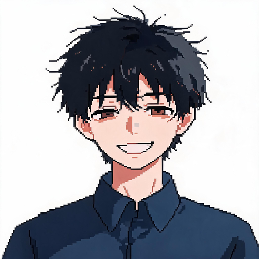
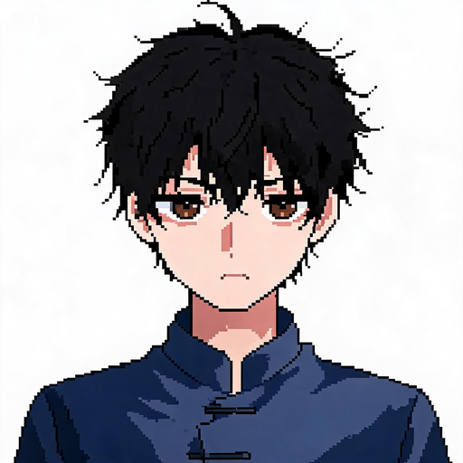
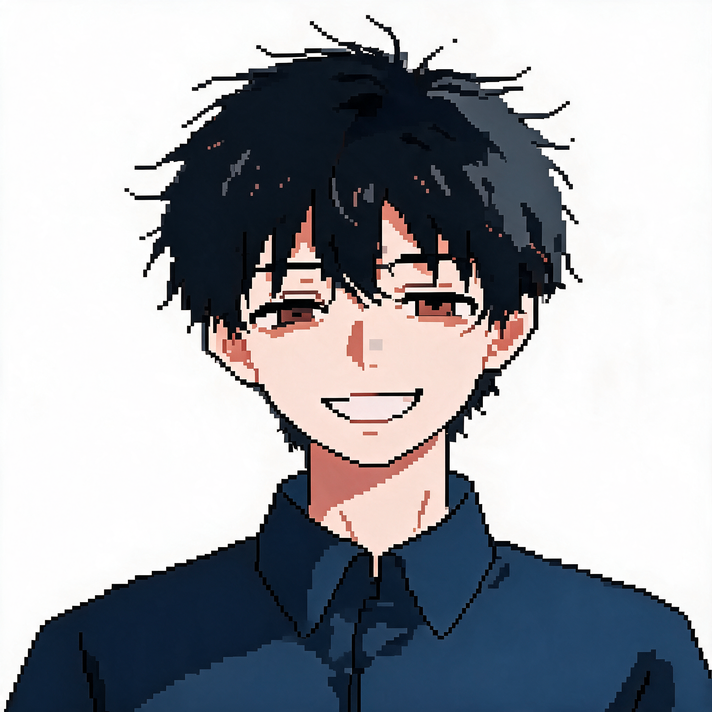
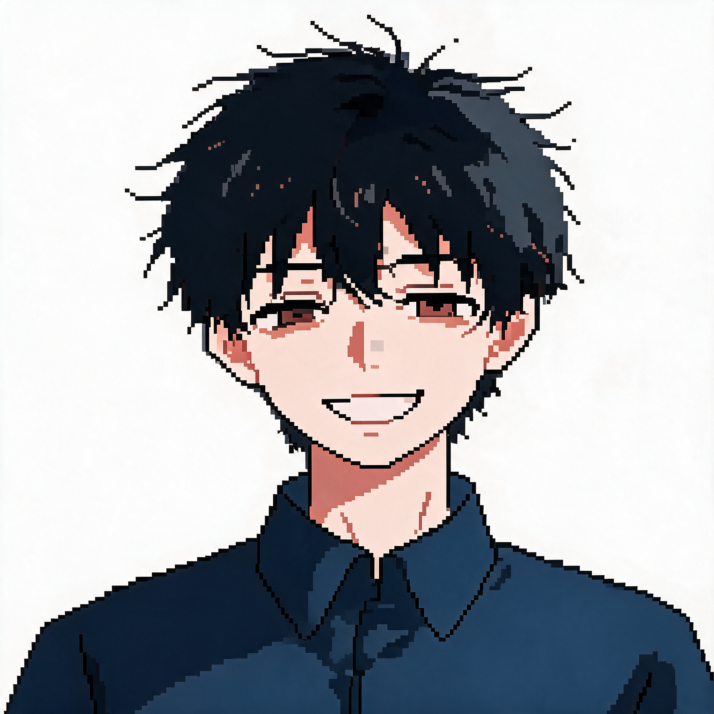
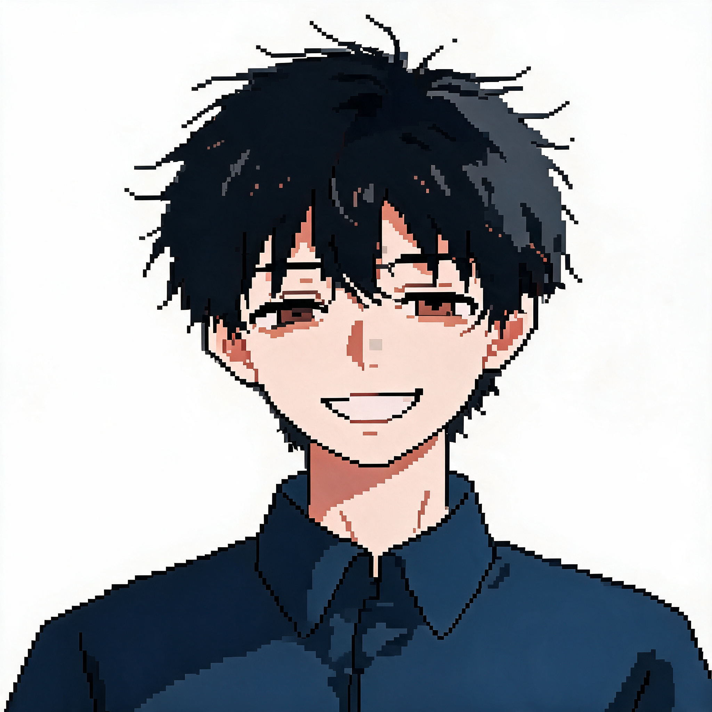
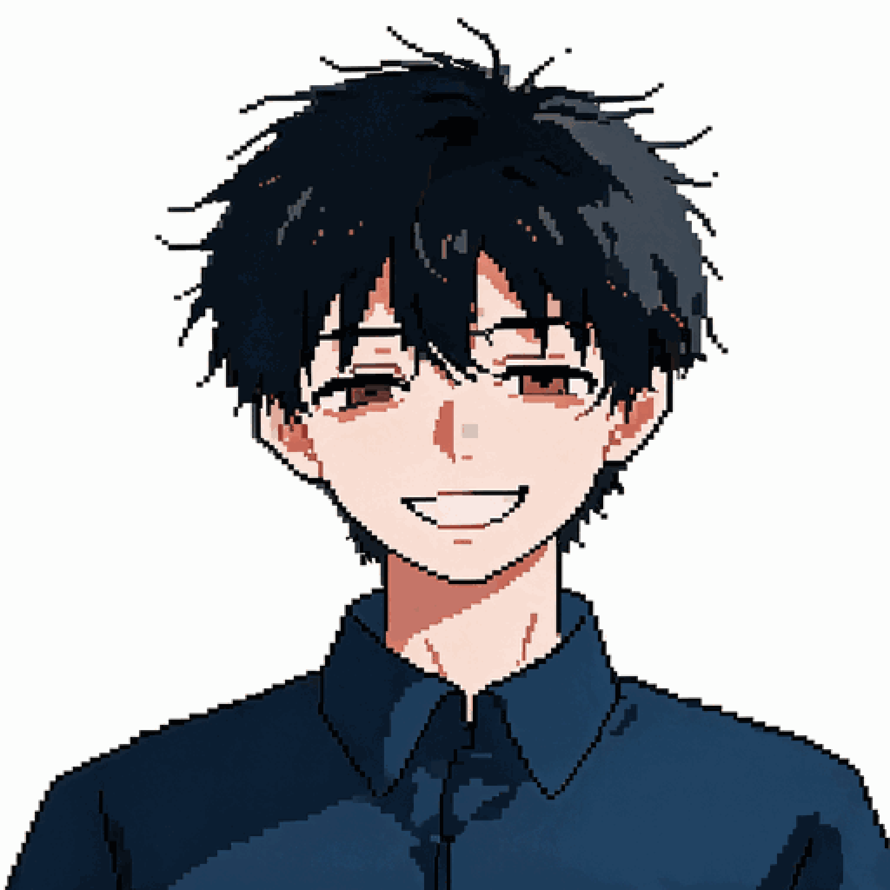

像素立绘方案对比测试
参考图: boy_neutral.jpg + boy_happy.jpg (双参考图生图)
问题: Seedream 5.0 Pro 即使在 strength=0.75 + 强像素风提示词下，仍生成"厚涂风假装像素"，颜色数 1500+ 无法真正像素化
解决: 后处理强制像素化 (LANCZOS降采样→颜色量化→NEAREST放大)，颜色数准确可控
① 原图参考 (boy_happy.jpg)
原 jpg (1577色)
高细节厚涂风

原 neutral.jpg
相貌参考

② Pro 图生图 (厚涂假装像素，颜色数仍 1500+)
s=0.45 (1601色)
几乎不像素化

s=0.65 (1593色)
仍有厚涂感

s=0.75 (1609色)
高strength仍不像素化

③ 后处理强制像素化 (颜色数准确)
512×512 / 96色
精细像素块

原jpg直接后处理 256/64
跳过Pro，直接量化原jpg
推荐方案：
由于 Seedream Pro 无法真正像素化(始终生成厚涂)，建议采用 后处理强制像素化：
用 Pro 图生图(s=0.45, 双参考图) 生成相貌一致的厚涂立绘 → LANCZOS 降采样到 256×256 → 量化到 64 色(Floyd-Steinberg dithering) → NEAREST 放大到 2048×2048 → rembg 抠图
这样可同时保证：相貌/配色/表情一致(图生图双参考) + 真正像素感(后处理量化)